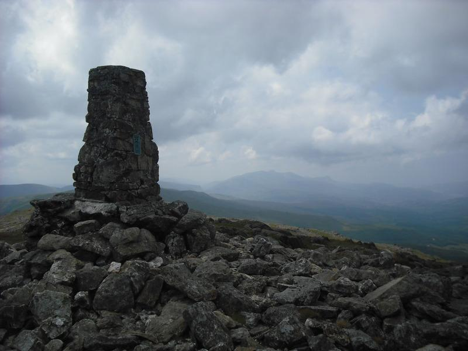
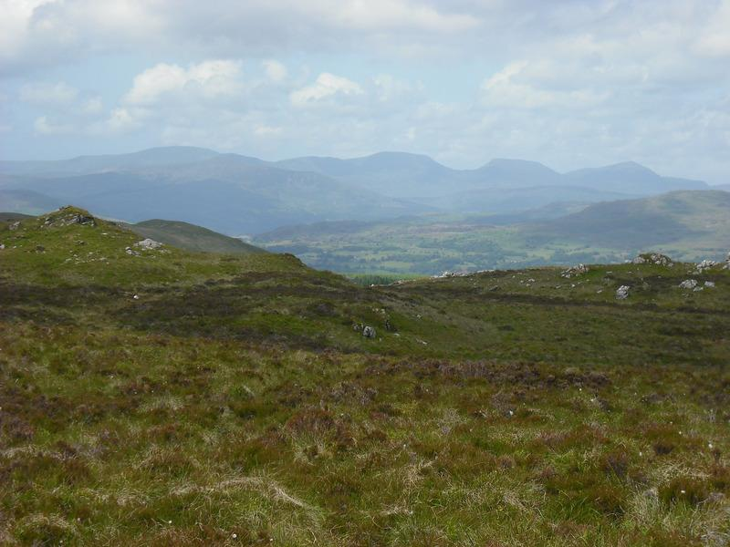
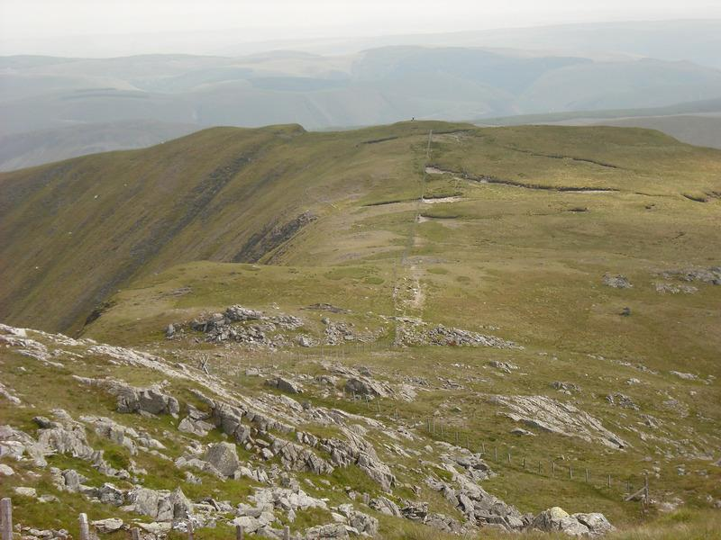

This was the day of the England versus West Germany World Cup match,
so it seemed like a good idea to go for a walk. I couldn't persuade
anyone else to come out with me so decided the visit Cwm Cywarch,
where I have never been before. I also wanted to climb Aran Fawddwy,
which would be another first for me.
To see more photos click here.
Cadair Idris from the summit of Aran Fawddwy

I managed to find the road into Cwn Cywarch easily enough. The turn
off from Abercywarch onto the minor road into the cwm is actually sign
posted. The final section of road is single track, but luckily I only
met one car coming the opposite way and I was close to a passing
place. There is a small car park next to the farm at Blaencywarch
Farm. This was almost empty and I parked next to a car whose occupants
were going climbing on Craig Cywarch. It was predicted to be the
hottest day of the year so far, with temperatures reaching 30C. Not
wanting to repeat my experience of getting dehydrated on the Glyders,
I made sure that I packed plenty of fluids.
I put on my boots and set off up the road past the farm. The path is
well marked on the left just past the farm and climbs up the hillside
past an obvious tree. It continues up alongside a stream up the
obvious gully to the col below Glasgwm. There are good views
northwards over the Rhinogs from here.
The path now follows the line of a fence, which runs slightly East of
North. This area can be very wet and boggy and there are several
sections with duckboards. Luckily, after the recent extended dry spell
it was almost completely dry and I didn't need the duckboards.
You can see the summit of Aran Fawddwy in the distance. In poor
visibility the fence would be a very useful navigational aid. As you
approach the summit area, the ground steepens slightly and about half
a kilometre from the top a fence comes in from the right. The descent
route follows this fence. Note that you cross a couple of other fence
before you reach this one.
View of the Rhinogs

Finally you emerge on the summit plateau and the trig point is visible
some way in front. The view from the summit is exceptional. Looking
North along the ridge over Aran Benllyn, Lake Bala is visible. To the
South Cadair Idris stands out and there are views over most of the
other peaks of North and mid Wales. Below the steep East face the
isolated waters of Creiglyn Dyfi can be seen. To the North East vast
areas of boggy moorland surrounding Lake Vyrnwy are visible.
While I was on the summit the wind had picked up, so I put on my
Paramo Tores Gilet. I retraced my steps back to the junction of the
two fences and set off towards the cairn on the ridge above the valley
of Hengwm. This commemorates Mike Aspain, a member of the RAF mountain
rescue team, who was killed in 1960 by lightning near here. From here
the path continues to the summit of Drysgol. There are fine
retrospective views of Aran Fawddwy from the whole of this
section. The wind had blown in the clouds from the west and the
summit of Aran Fawddwy was intermittently disappearing.
Looking towards the memorial cairn

Once over the summit of Drysgol, I headed downhill towards the col at
the base of Waun Goch. From the col there is an obvious path that
heads South West along the western slope of Waun Goch, leading back to
the road a hundred yards or so from the car park. As I descended the
track the cloud over the summits began to disperse again and they were
clear by the time I got back to the road.
Apart from the two climbers, I saw only two other people, one near the
summit of Aran Fawddwy and one near the bottom of the final descent. I
was surprised at the remoteness of Aran Fawddwy. In the good
conditions I experienced it was straightforward, but in poor
visibility navigating the route would be quite a challange. Although
there are paths their relativley uneroded state, given the boggy
nature of the ground, suggests that there must be relatively light
traffic. I shall definitely be back, possibly on a two day trip, to
explore the area better.


{kind=link}
{kind=link}
{kind=link}
{kind=link}
{kind=link}
{kind=link}
{kind=link}
{kind=link}
{kind=link}
{kind=link}
{kind=link}
{kind=link}
{kind=link}
{kind=link}
{kind=link}
{kind=link}